Augments the primary high-signal QC package with additional controls for manual event/control front-mask review. Green contours show q70 bright-front masks; yellow contours show the central ROI guard mask.
| ROI | Role | Cycle | Priority | Flags | Panel |
|---|
| cycle62_rank2_obj2 | control | 62 | 7.676 | fragmented_q70_mask;threshold_sign_unstable | 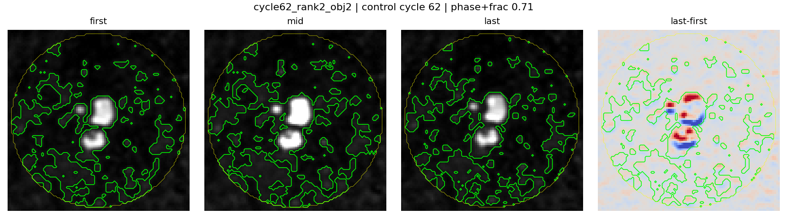 |
| cycle62_rank3_obj9 | control | 62 | 3.447 | fragmented_q70_mask;active_control;already_in_primary_qc |  |
| cycle62_rank1_obj4 | control | 62 | 2.934 | fragmented_q70_mask | 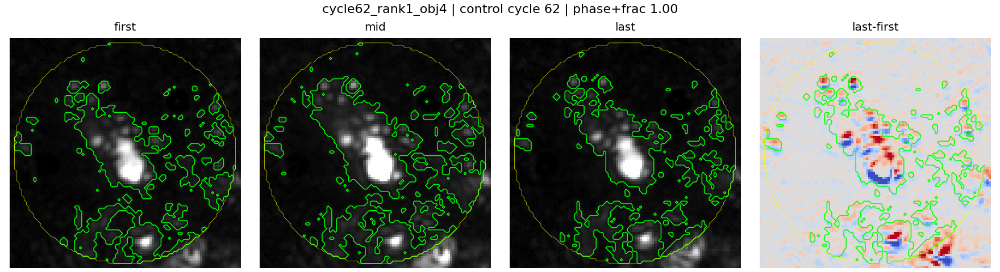 |
| cycle88_rank2_obj4 | control | 88 | 2.549 | fragmented_q70_mask;already_in_primary_qc |  |
| cycle158_rank1_obj2 | control | 158 | 2.070 | threshold_sign_unstable | 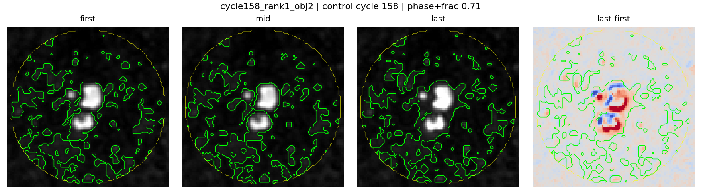 |
| cycle58_rank6_obj29 | control | 58 | 1.759 | diffusion_ci_crosses_zero | 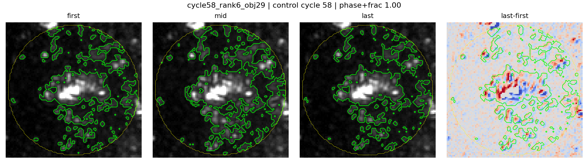 |
| cycle158_rank6_obj3 | control | 158 | 1.671 | fragmented_q70_mask | 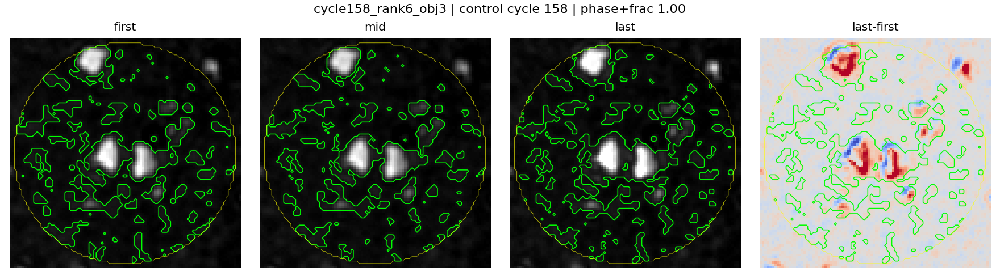 |
| cycle62_rank4_obj1 | control | 62 | 1.120 | fragmented_q70_mask;diffusion_ci_crosses_zero;active_control | 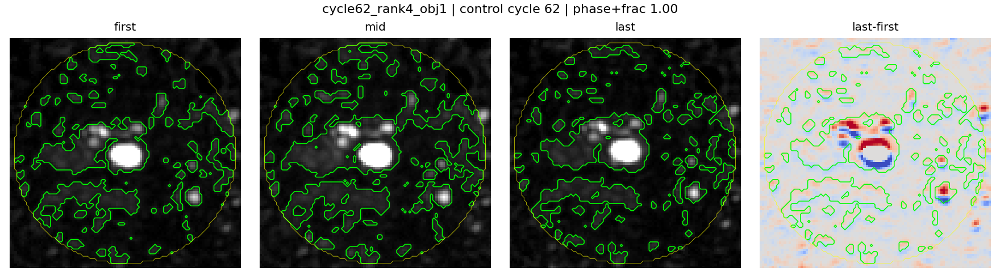 |
| cycle90_rank6_obj3 | control | 90 | 1.022 | fragmented_q70_mask | 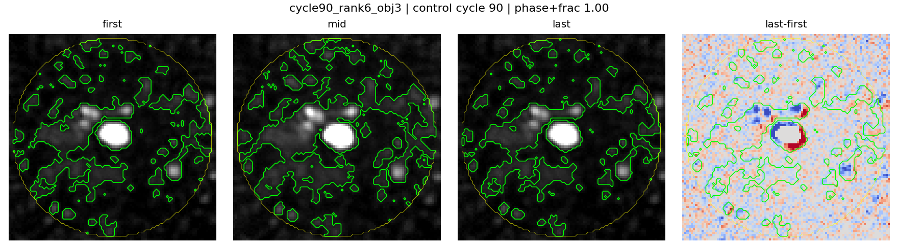 |
| cycle58_rank4_obj2 | control | 58 | 0.953 | fragmented_q70_mask;already_in_primary_qc | 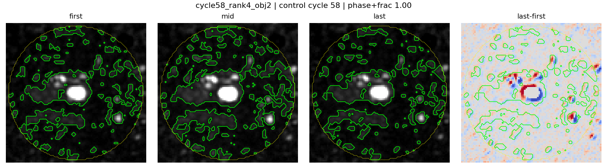 |
| cycle58_rank3_obj9 | control | 58 | 0.767 | fragmented_q70_mask;active_control | 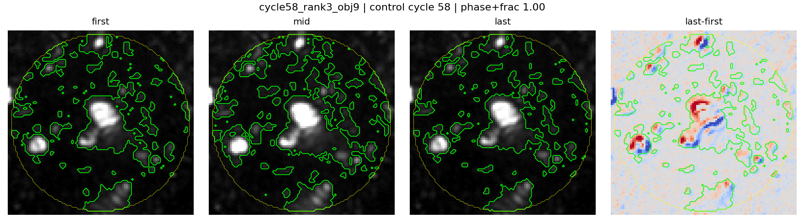 |
| cycle88_rank3_obj6 | control | 88 | 0.524 | fragmented_q70_mask;already_in_primary_qc |  |
| cycle158_rank4_obj8 | control | 158 | 0.282 | fragmented_q70_mask | 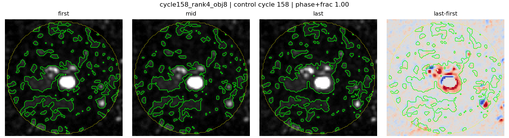 |
| cycle88_rank4_obj8 | control | 88 | 0.273 | fragmented_q70_mask;already_in_primary_qc | 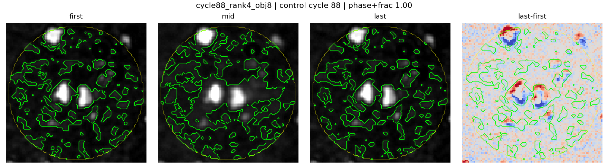 |
| cycle88_rank5_obj9 | control | 88 | 0.022 | fragmented_q70_mask | 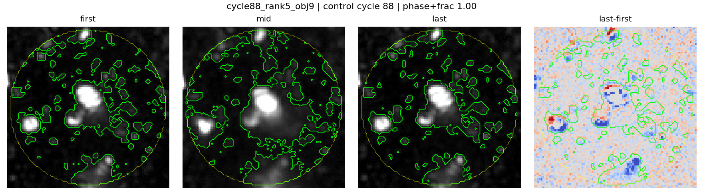 |
| cycle90_rank3_obj4 | control | 90 | -0.091 | none | 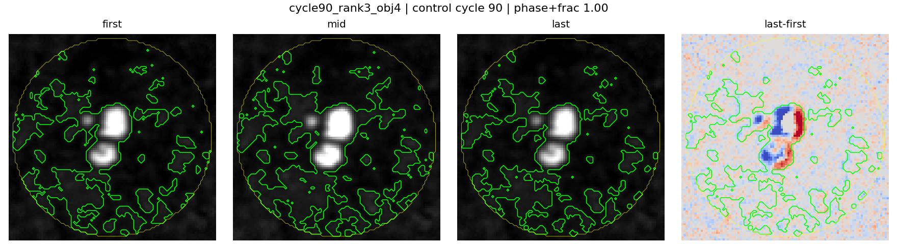 |
| cycle157_rank1_obj1 | control | 157 | -0.150 | none | 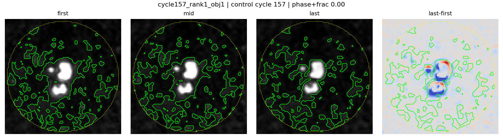 |
| cycle158_rank2_obj1 | control | 158 | -0.320 | fragmented_q70_mask;diffusion_ci_crosses_zero | 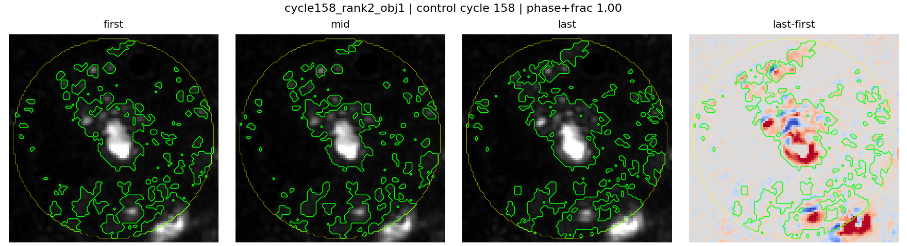 |
| cycle157_rank4_obj8 | control | 157 | -0.336 | fragmented_q70_mask | 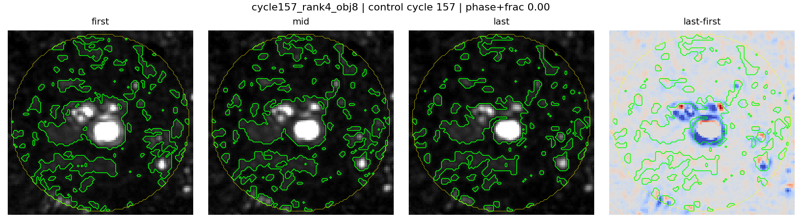 |
| cycle157_rank6_obj3 | control | 157 | -0.340 | fragmented_q70_mask;diffusion_ci_crosses_zero | 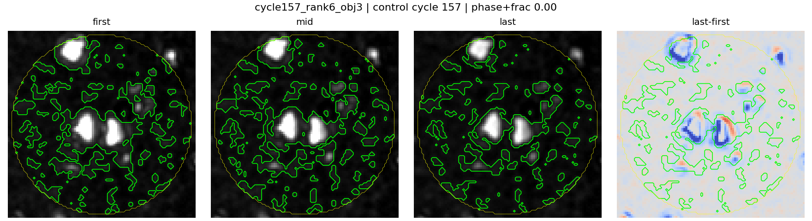 |
| cycle157_rank2_obj2 | control | 157 | -0.392 | fragmented_q70_mask;diffusion_ci_crosses_zero | 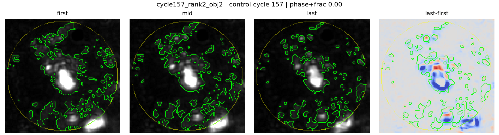 |
| cycle118_rank4_obj1 | control | 118 | -0.439 | fragmented_q70_mask;diffusion_ci_crosses_zero | 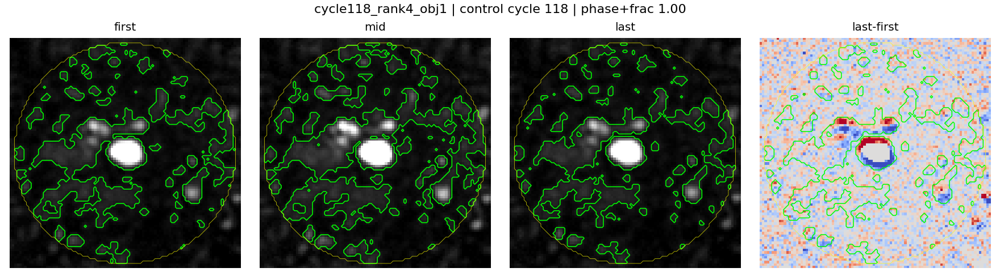 |
| cycle90_rank5_obj10 | control | 90 | -1.004 | fragmented_q70_mask;diffusion_ci_crosses_zero | 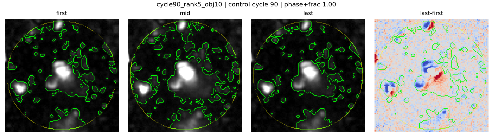 |
| cycle118_rank1_obj7 | control | 118 | -1.011 | fragmented_q70_mask;already_in_primary_qc |  |
| cycle60_rank5_obj18 | event | 60 | 7.145 | fragmented_q70_mask;threshold_sign_unstable | 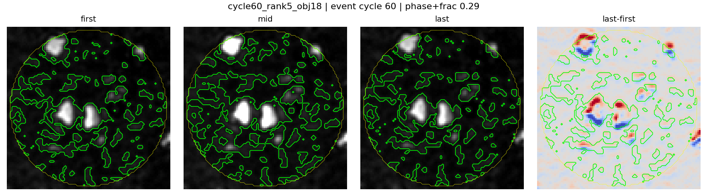 |
| cycle60_rank3_obj9 | event | 60 | 6.845 | fragmented_q70_mask;already_in_primary_qc |  |
| cycle60_rank1_obj1 | event | 60 | 3.823 | fragmented_q70_mask;already_in_primary_qc | 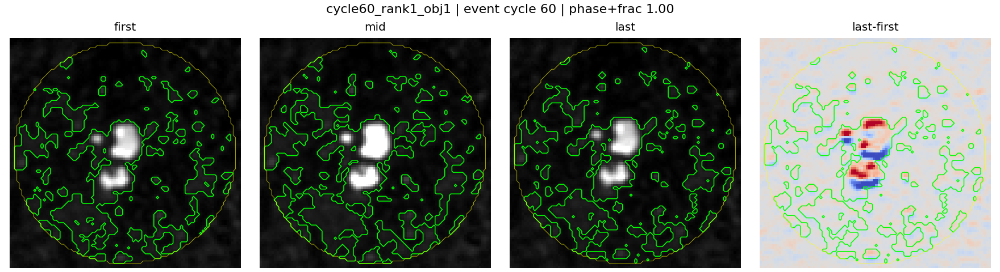 |
| cycle60_rank2_obj2 | event | 60 | 3.664 | fragmented_q70_mask;already_in_primary_qc |  |
| cycle156_rank7_obj27 | event | 156 | 3.319 | already_in_primary_qc | 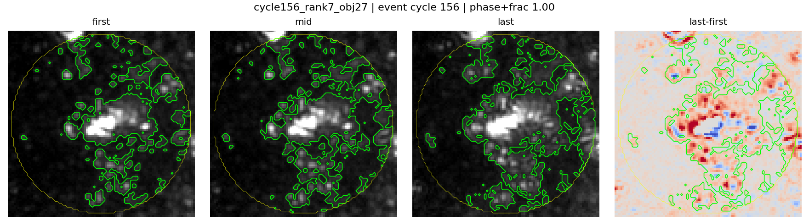 |
| cycle86_rank2_obj6 | event | 86 | 3.093 | fragmented_q70_mask | 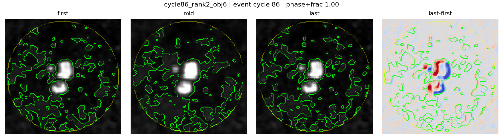 |
| cycle86_rank6_obj78 | event | 86 | 2.828 | fragmented_q70_mask;diffusion_ci_crosses_zero | 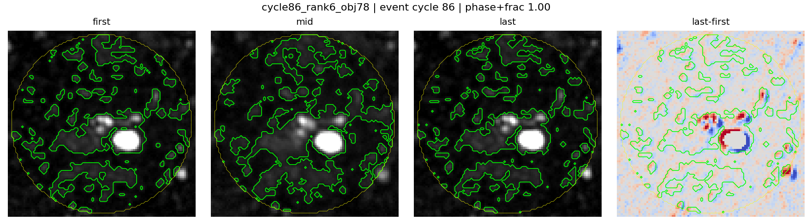 |
| cycle60_rank4_obj5 | event | 60 | 2.716 | fragmented_q70_mask;diffusion_ci_crosses_zero;already_in_primary_qc |  |
| cycle156_rank8_obj10 | event | 156 | 2.594 | already_in_primary_qc | 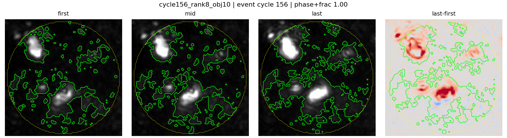 |
| cycle60_rank6_obj26 | event | 60 | 2.554 | diffusion_ci_crosses_zero;already_in_primary_qc | 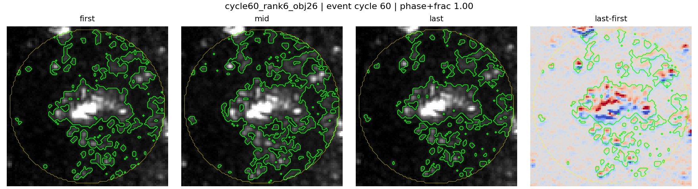 |
| cycle156_rank1_obj1 | event | 156 | 2.515 | already_in_primary_qc |  |
| cycle156_rank6_obj3 | event | 156 | 2.487 | diffusion_ci_crosses_zero;already_in_primary_qc |  |
| cycle86_rank5_obj8 | event | 86 | 2.475 | fragmented_q70_mask;diffusion_ci_crosses_zero | 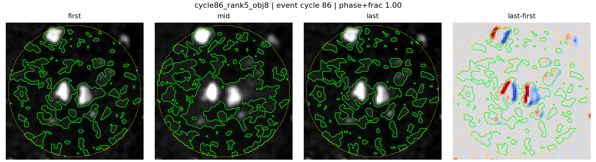 |
| cycle156_rank2_obj2 | event | 156 | 2.349 | already_in_primary_qc | 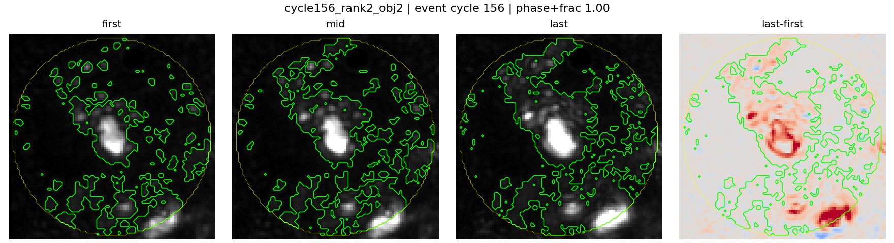 |
| cycle156_rank5_obj4 | event | 156 | 2.208 | fragmented_q70_mask;diffusion_ci_crosses_zero;already_in_primary_qc |  |
| cycle116_rank7_obj37 | event | 116 | 1.897 | fragmented_q70_mask;already_in_primary_qc |  |